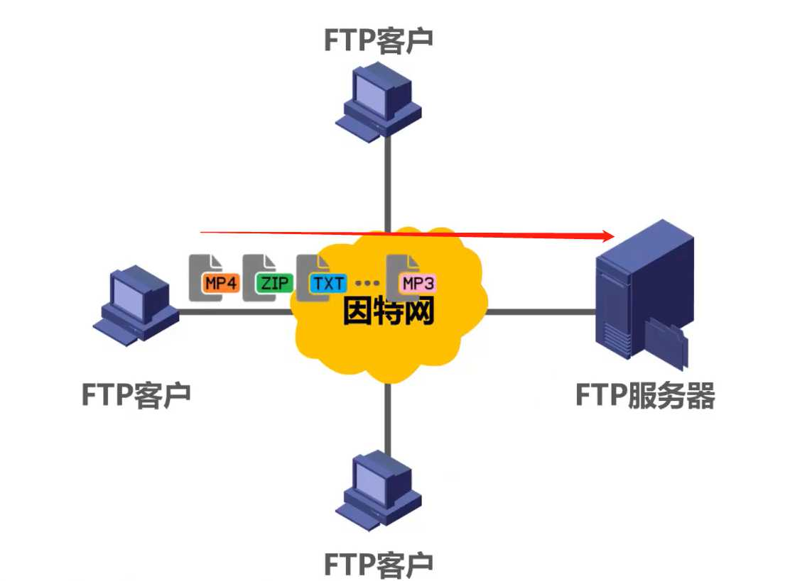
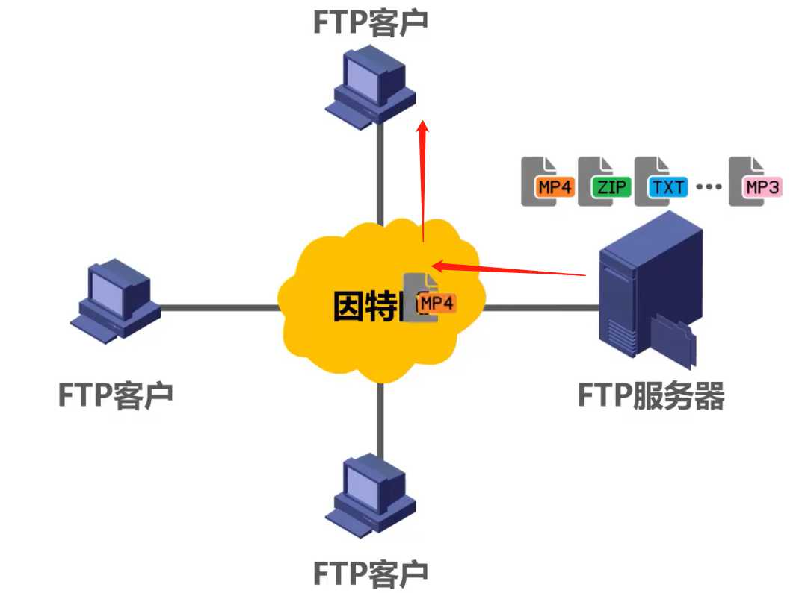
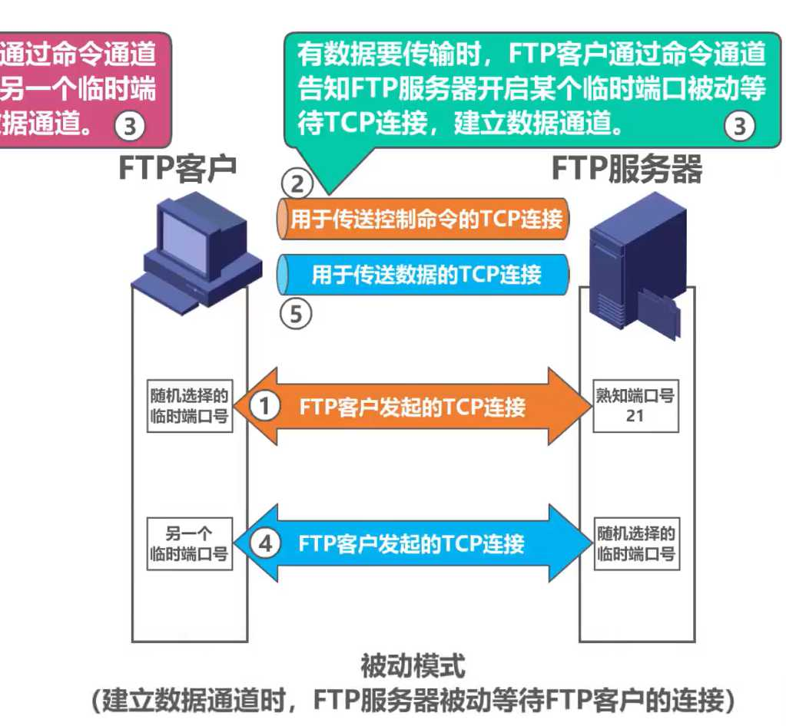

计算机网络第6章（应用层）
6.1、应用层概述


我们在浏览器的地址中输入某个网站的域名后，就可以访问该网站的内容，这个就是万维网WWW应用，其相关的应用层协议为超文本传送协议HTTP

用户在浏览器地址栏中输入的是“见名知意”的域名，而TCP/IP的网际层使用IP地址来表示目的主机，从域名到IP地址的装转换，由属于应用层范畴的域名系统DNS，在后台帮用户完成

常见的应用

总结

6.2、客户/服务器方式（C/S方式）和对等方式（P2P方式）
概念

客户/服务器方式（C/S方式）

对等方式（P2P方式）

总结

6.3、动态主机配置协议DHCP
概念
- 互联网广泛使用的动态主机配置协议 DHCP (Dynamic Host Configuration Protocol) 提供了即插即用连网 (plug-and-play networking) 的机制。
- 这种机制允许一台计算机加入新的网络和获取 IP 地址，而不用手工配置。
DHCP的作用
在之前，如果要正常访问Web服务器，需要该主机手动配置网络的相关配置信息

如果主机数很多，就工作量大，容易出错
如果我们给网络中添加一台DHCP服务器

DHCP的工作过程
DHCP 使用客户 - 服务器方式
- 需要 IP 地址的主机在启动时就向 DHCP 服务器广播发送发现报文 （DHCP DISCOVER），这时该主机就成为 DHCP 客户。
- 本地网络上所有主机都能收到此广播报文，但只有 DHCP 服务器才回答此广播报文。
- DHCP 服务器先在其数据库中查找该计算机的配置信息。若找到，则返回找到的信息。若找不到，则从服务器的 IP 地址池 (address pool) 中取一个地址分配给该计算机。DHCP服务器的回答报文叫做提供报文（DHCP OFFER）。
DHCP 工作方式
- DHCP 使用客户-服务器方式，采用请求/应答方式工作。
- DHCP 基于 UDP 工作（DHCP报文在运输层会被封装成为UDP用户数据报），DHCP 服务器运行在 67 号端口， DHCP客户运行在 68 号端口。
DHCP交互过程

DHCP客户端将广播发送DHCP发现报文（DHCP DISCOVER）
- 事务ID
- DHCP客户端的MAC地址
封装该报文的IP数据报的源IP地址为0.0.0.0，这是因为主机目前还未分配到IP地址，因此使用该地址代替
目的IP地址为广播地址255.255.255.255，之所以广播发送，是因为主机现在并不知道网络中有哪几个DHCP服务器。它们的IP地址各是什么
DHCP服务器收到DHCP发现报文后，根据其中封装的DHCP客户端的MAC地址来查找自己的数据库，如果查到匹配信息，则使用这些配置信息来构建并发送DHCP提供报文，如果没有则采用默认配置信息来构建报文并发送

DHCP服务端将广播发送DHCP提供报文（DHCP OFFER）
- 事务ID：DHCP客户端会与之前DHCP发现报文的事务ID做对比，来判断该DHCP提供报文是否是自己的
- 配置信息：
- IP地址：DHCP服务器从自己的IP地址池中挑选待租用给主机的IP地址（使用ARP来确保所选IP地址未被网络中其他主机占用）
- 子网掩码
- 地址租期
- 默认网关
- DNS服务器
源IP地址：发送DHCP提供报文的DHCP服务器的IP
目的地址：因为目的主机还没分配到IP，所以使用广播地址
在本例中，DHCP客户会收到两个DHCP服务器发来的DHCP提供报文，DHCP客户从中选择一个，一般选择先到的，并向所选择的DHCP服务器发送DHCP请求报文

DHCP客户端将广播发送DHCP请求报文（DHCP REQUEST）
- 事务ID
- DHCP客户端的MAC地址
- 接收的租约中的IP地址
- 提供此租约的DHCP服务器端的IP地址
源地址：0.0.0.0，因为此时DHCP客户才从多个DHCP服务器中挑选一个作为自己的DHCP服务器。它首先要征得该服务器的同意，之后才能正式使用向该DHCP服务器租用的IP地址
目的地址：广播地址，这样可以一次性向所有DHCP服务器发送DHCP请求报文，来告知它们是否请求它们作为自己的DHCP服务器
在本例中，假设DHCP客户端选择DHCP服务器1作为自己的DHCP服务器，DHCP服务器1接受该请求，于是DHCP服务器1给DHCP客户端发送DHCP确认报文

源地址：DHCP服务器1的IP地址
目的地址：广播地址
DHCP客户收到该报文后就可以使用租用的IP地址
在使用前还会进行ARP检测

剩下流程图示

DHCP中继代理
下图的网络拓扑中的各主机是否可以通过DHCP来自动获取到网络配置？

使用DHCP中继代理是因为我们不用给每一个网络上都设置一个DHCP服务器，这样会使DHCP服务器的数量太多
总结

6.4、域名系统DNS
概述
域名相比IP地址更容易记忆

因特网是否可以只使用一台DNS服务器？
不行


名称相同的域名其等级未必相同


域名解析过程


总结

6.5、文件传送协议FTP
概念

文件传送协议FTP的应用
FTP采用C/S方式（客户/服务器方式）
FTP客户计算机可将各种类型的文件上传到FTP服务器计算机
FTP客户计算机也可以从FTP服务器计算机下载文件


FTP基本工作原理
FTP服务器监听熟知端口（端口号为 21），使客户进程能够连接上。
FTP客户随机选择一个临时端口号与其建立TCP连接，这条TCP连接用于FTP客户与服务器之间传送FTP的相关控制命令（这条连接是FTP客户与服务器之间的命令通道）

下图为建立数据通道的TCP连接
FTP服务器使用自己的熟知端口号20与其建立TCP连接，这条TCP连接用于FTP客户与服务器之间传送文件

上面例子是主动模式：建立数据通道时，FTP服务器主动连接FTP客户
下图实例为被动模式
两种模式对比

注意两种模式都是
控制连接在整个会话期间保持打开状态
数据连接传输完毕后就关闭
总结

6.6、电子邮件
概念

邮件发送和接收过程

简单邮件传送协议SMTP（Simple Mail Transfer Protocol）的基本工作原理

电子邮件的信息格式

邮件读取

基于万维网的电子邮件

总结

6.7、万维网WWW
概念
概述
- 万维网 WWW (World Wide Web) 并非某种特殊的计算机网络。
- 万维网是一个大规模的、联机式的信息储藏所。
- 万维网用链接的方法能非常方便地从互联网上的一个站点访问另一个站点，从而主动地按需获取丰富的信息。
- 这种访问方式称为“链接”。
万维网的工作方式
- 万维网以客户 - 服务器方式工作。
- 浏览器就是在用户计算机上的万维网客户程序。万维网文档所驻留的计算机则运行服务器程序，因此这个计算机也称为万维网服务器。
- 客户程序向服务器程序发出请求，服务器程序向客户程序送回客户所要的万维网文档。
- 在一个客户程序主窗口上显示出的万维网文档称为页面 (page)。


万维网应用举例
访问网页

怎样标志分布在整个互联网上的万维网文档？

万维网的文档

超文本传输协议HTTP（Hyper Transfer Protocol）
概念和传输过程
- 在万维网客户程序与万维网服务器程序之间进行交互所使用的协议，是超文本传送协议 HTTP (HyperText Transfer Protocol)。
- HTTP 是一个应用层协议，它使用 TCP 连接进行可靠的传送。

- 每个万维网网点都有一个服务器进程，它不断地监听 TCP 的端口 80，以便发现是否有浏览器向它发出连接建立请求。
- 一旦监听到连接建立请求并建立了 TCP 连接之后，浏览器就向万维网服务器发出浏览某个页面的请求，服务器接着就返回所请求的页面作为响应。
- 最后，TCP 连接就被释放了。

HTTP报文格式
HTTP请求报文格式

HTTP响应报文格式

使用Cookie在服务器上记录用户信息

万维网缓存与代理服务器

如果该请求有缓存

如果该请求没有缓存

若WEb缓存的命中率比较高
则会大大减小了该链路上的通信量，因而减少了访问因特网的时延
假设原始服务器的文档被更改，这样代理服务器的文档就不是最新的
所以原始服务器通常会为每个响应的对象设定一个修改时间字段和一个有效日期字段
若未过期

若过期并且代理服务器的文档和原始服务器的文档一致，原始服务器则给代理服务器发送不包含实体主体的响应

若过期并且代理服务器的文档和原始服务器的文档不一致，原始服务器则给代理服务器发送封装有该文档的响应报文

总结